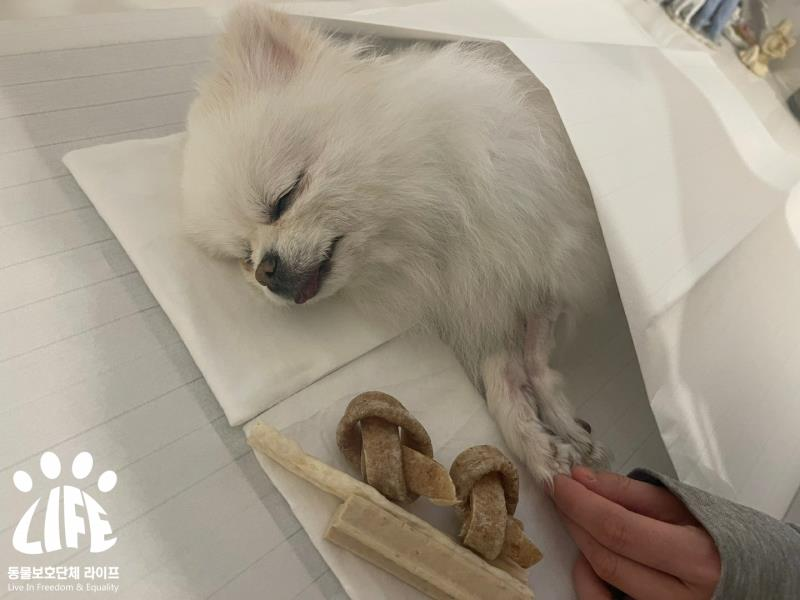
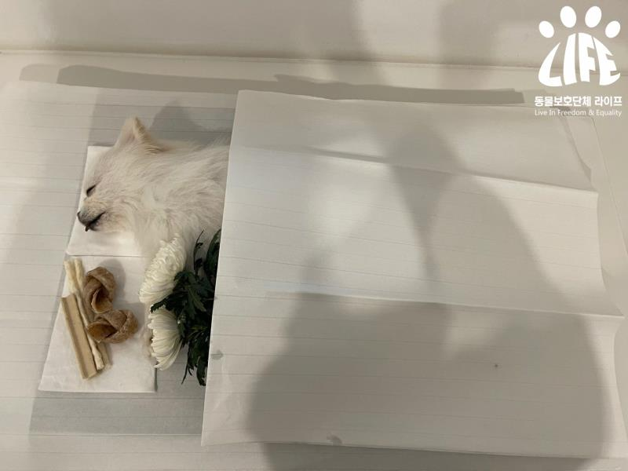
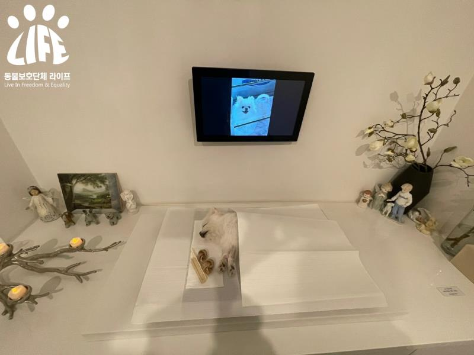
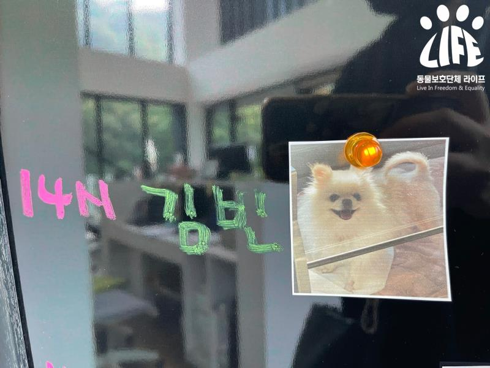

Binh Yi became a star in the sky. (+Sponsorship of treatment expenses)
Registration Date Author Life Attachment activitydata_07_03    {kind=link}
Binh Yi became a star in the sky.
At the time of the rescue, Bin, who was found to be in a state of quadriplegia, was
Is it because the wounds in the body and mind were deep?
Developing symptoms such as hepatic failure, peritonitis, pancreatitis, etc.
The medical staff can't miss a moment of nervousness.
It had even occurred to the point of being in a serious condition.
Through the prayers of many people and the efforts of the medical staff,
Bin-Yi, who appeared to be improving,
Take a step by step with slender legs,
He was shown walking miraculously.
Empty lice with a small body size of 2.4 kilos
I was so grateful for the treatment so well,
We believe that miracles will come to pass.
Every day I longed for it.
What Binh Yi took a step forward was
Was he trying to convey our gratitude?
Binh suddenly collapsed above his heart.
In an emergency, many medical staff went to first aid together,
Binh Yi thus became a star in the sky.
It's so vain.
Life is a sparsely populated place with a limb paralyzed bean
The deserter thinks that it is no different than the one who caused the bean to die.
Go up directly from Busan to find the deserted person
They chased the trail,
The empty tooth that would have been abandoned due to the burden of the treatment must be restored to health.
I had also vowed to make it possible for me to meet a better family.
Binh Yi has only been going through the hard and painful things that have happened.
I wonder if I have become a star or not, and my heart is stirring.
I hope that the empty lice will no longer be sick.
Bin-yi, who gave me the gift of happiness with a pretty smile,
I sincerely hope you are happy there.
Please remember the bean.
Life will surely find the one who deserted the bean, and inquire into the sin.
Thank you to everyone who has supported Binyi's treatment.
We will create a world where animals and people coexist.
Animal Protection Group Life